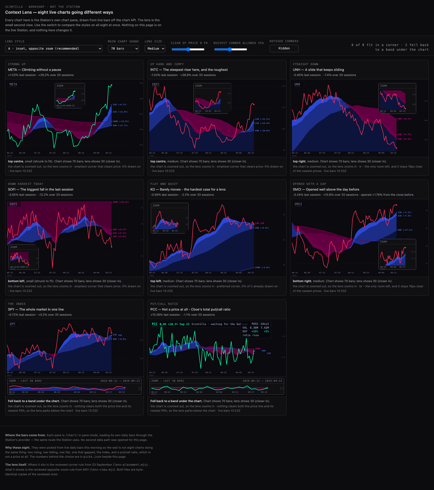
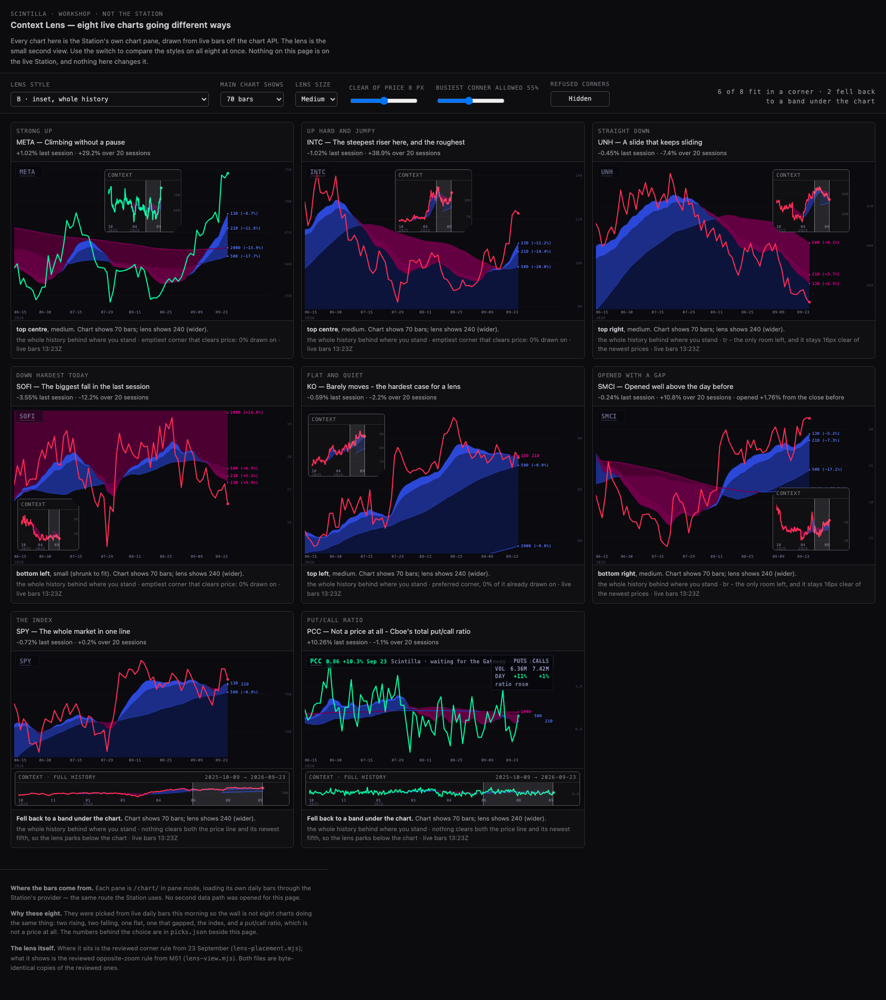
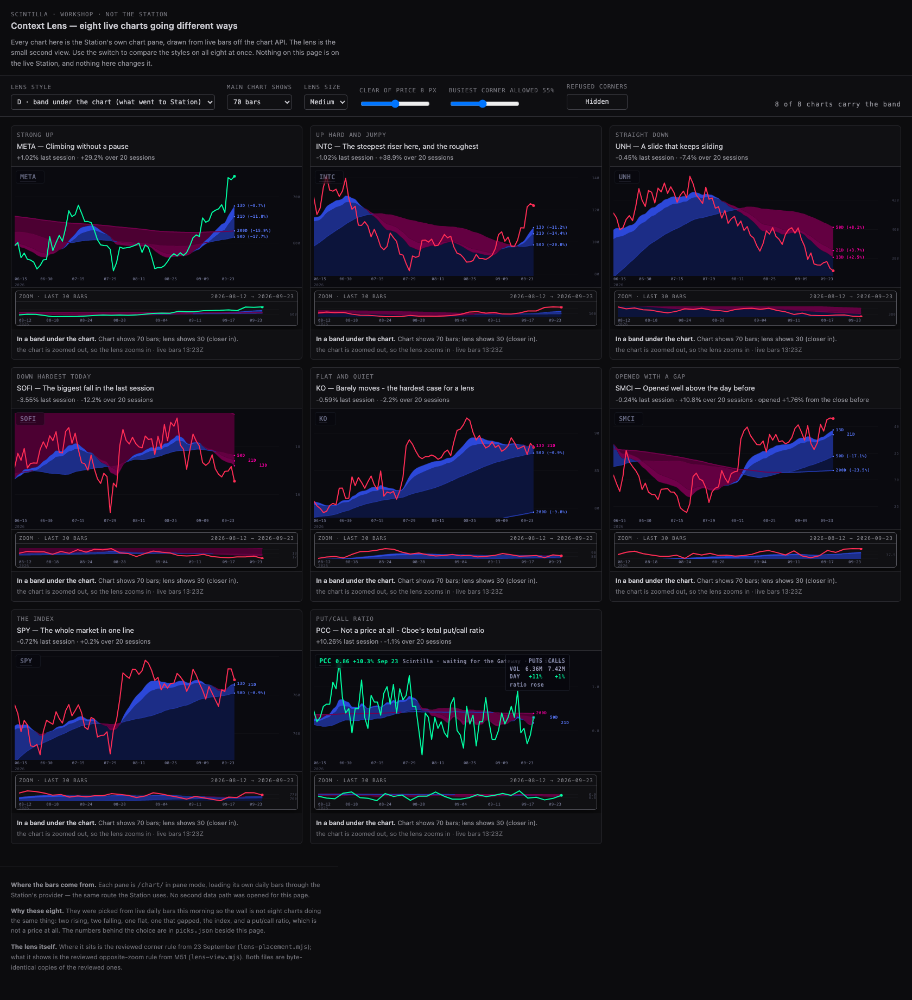
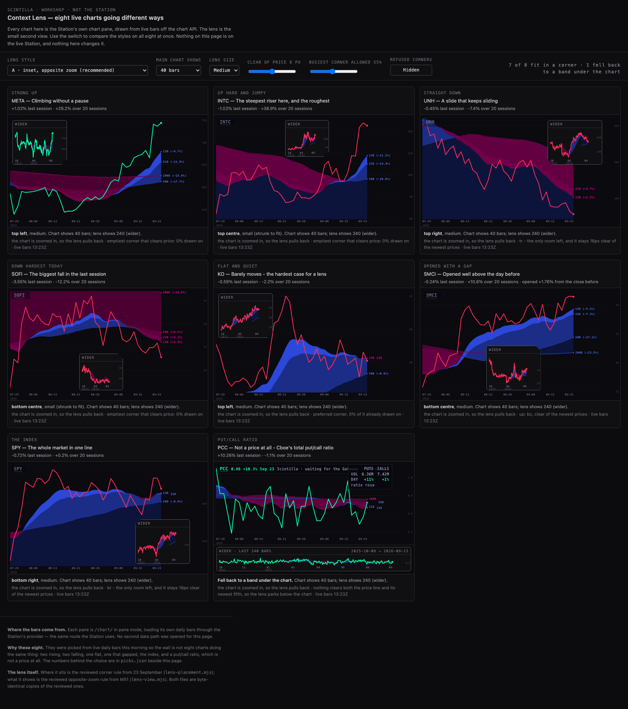
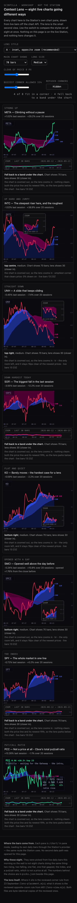

The lens is off the live Station and stays off it. This page is the workshop you asked for: one wall, eight real charts pulling in different directions this morning, and a switch that puts each lens style on all eight at once so they can be compared side by side.
The thing at the bottom has a name, and it explains itself. The lens that went to the Station was
mounted as a reserved strip under the price. That strip is the fallback of the rule you approved on
23 September: when the lens cannot find a corner that stays clear of the price line, it parks below the chart
instead of covering it. On the Station's short, wide panes it hit that fallback nearly every time, so the
fallback became the whole look — a second pane under every chart. It has been taken off the Station
(c1e83df) and nothing here puts it back.
The workshop is /workshop/context-lens/ — a served page, not linked from the deck, so it cannot
appear on the Station wall by accident. It is on the branch, not deployed: the coordinator publishes it, and
the link is then station.scintillahub.ai/workshop/context-lens/.
| Style | What the lens does | Where it comes from |
|---|---|---|
| A · inset, opposite zoom recommended |
A small second chart in the emptiest corner, showing the opposite zoom of the big chart: wide chart, the lens zooms into the last 30 bars; zoomed-in chart, the lens pulls back six times as wide. Both always end on the same bar. | The look you approved on 23 Sep, with the rule from the 24 Sep review. |
| B · inset, whole history | The same corner box, but it shows all the history there is, with a pale marker over the slice the big chart is on. | The 23 Sep look's own "context" state — the one that was retired on 24 Sep. |
| C · inset, last 24 sessions | The same corner box, always the last 24 sessions, whatever the big chart is doing. | The older "detail" state, kept for comparison. |
| D · band under the chart | No corner box at all: the chart gives up height and the lens takes a strip underneath. This is exactly what was on the Station this morning. | What M58 shipped and you rejected — kept so the difference is visible, not described. |
The look you approved says the lens can show "context — the whole history". The rule from the later review says the full-history view is the replay you threw out, and the lens must never wander past the bar the big chart is on. They cannot both be right, so both are on the page:


My recommendation is A. It is the one that answers "what is happening right now" rather than "what happened all year", and it is the one the later review settled on. B stays in the switch so you can overrule that in one click.



This is the number that decides whether the lens can live in a corner at all. It was measured on these eight live charts, headless, this morning.
| Style and screen | Result |
|---|---|
| A · opposite zoom · 1680, chart showing 70 bars | 6 of 8 in a corner, 2 fell back to a band |
| A · opposite zoom · 1680, chart showing everything | 6 of 8 in a corner, 2 fell back |
| A · opposite zoom · 1680, chart zoomed in to 40 bars | 7 of 8 in a corner, 1 fell back |
| B · whole history · 1680 | 6 of 8 in a corner, 2 fell back |
| C · last 24 sessions · 1680 | 6 of 8 in a corner, 2 fell back |
| D · band · 1680 | 8 of 8 carry the band, by definition |
| A · opposite zoom · 390 (phone) | 4 of 8 in a corner, 4 fell back |
This contradicts what was written when the band was built. That note said the corner rule "refuses every corner on a zoomed-out chart". On these panes it does not: at desk width it finds a corner six or seven times out of eight. The difference is pane size — a workshop card is about 520 px wide and 300 px tall, while a Station pane is shorter and wider. So the honest reading is: the corner box works at this size; whether it works on the Station wall has to be measured on the Station wall, not assumed from either note.
| Chart | Why it is on the wall | Last session | 20 sessions |
|---|---|---|---|
| META | Strong up — climbing without a pause | +1.02% | +29.2% |
| INTC | Up hard and jumpy — the steepest riser, and the roughest | −1.02% | +38.9% |
| UNH | Straight down — a slide that keeps sliding | −0.45% | −7.4% |
| SOFI | Down hardest in the last session | −3.55% | −12.2% |
| KO | Flat and quiet — the hardest case for a lens | −0.59% | −2.2% |
| SMCI | Opened +1.76% away from the close before — the gap | −0.24% | +10.8% |
| SPY | The index — the whole market in one line | −0.72% | +0.2% |
| PCC | Cboe's total put/call ratio — not a price at all | +10.26% | −1.1% |
Every number came from the chart API's daily bars this morning, and the file that records them sits beside the
workshop as picks.json. The wall is live: each pane loads its own bars through the Station's own
chart page and re-reads them every minute, so these eight will not stay in these shapes for ever. When the
shapes go stale, the picks file is regenerated — the page itself does not need changing.
station/lens-workshop-20260924.